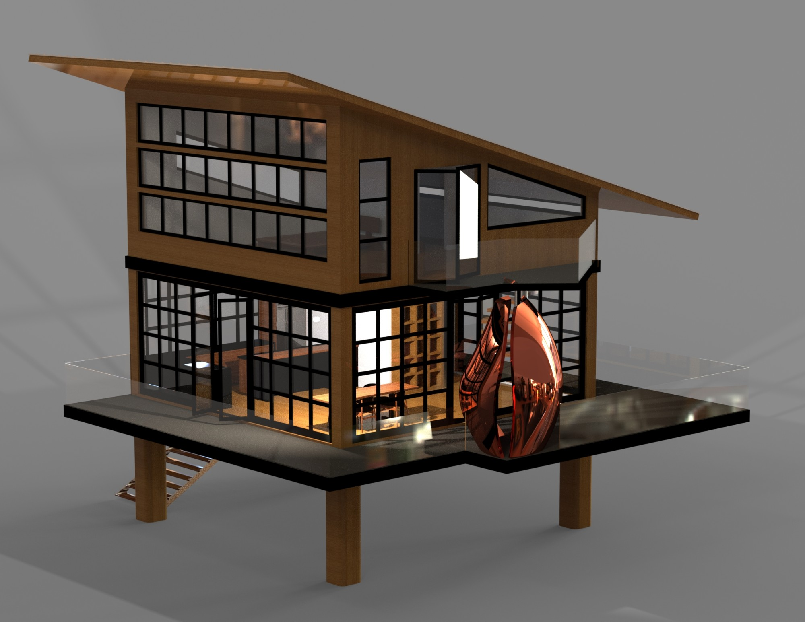
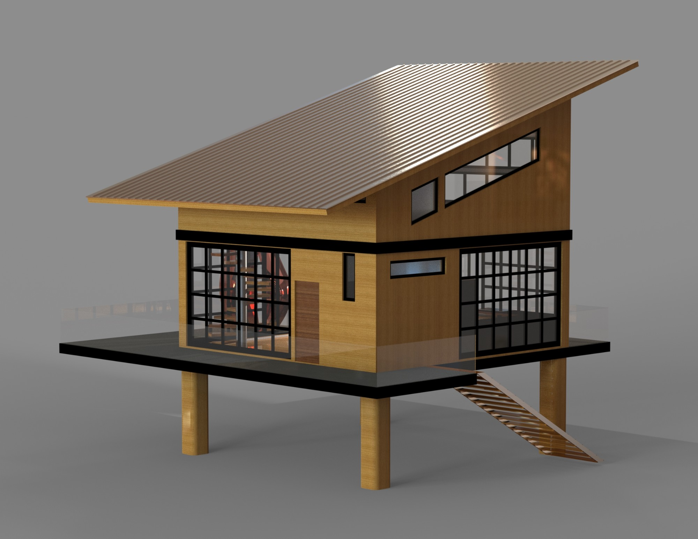
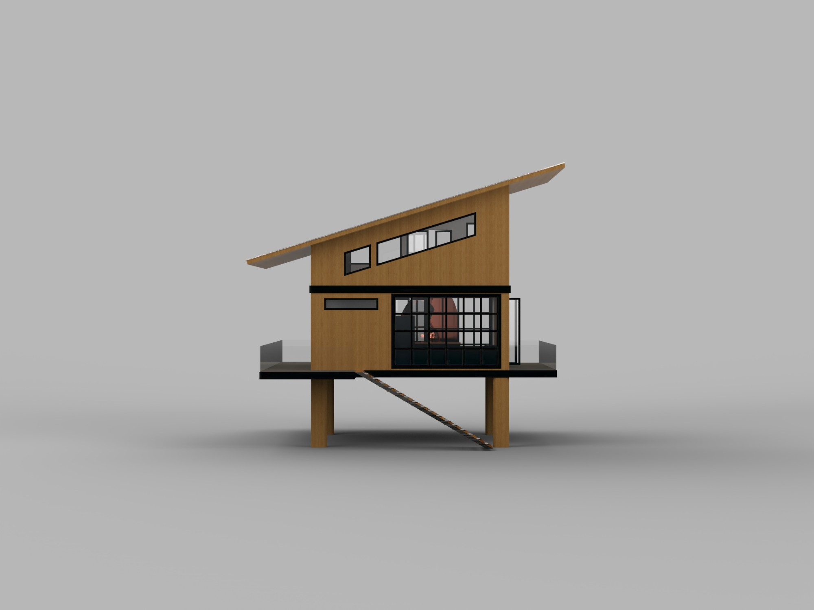
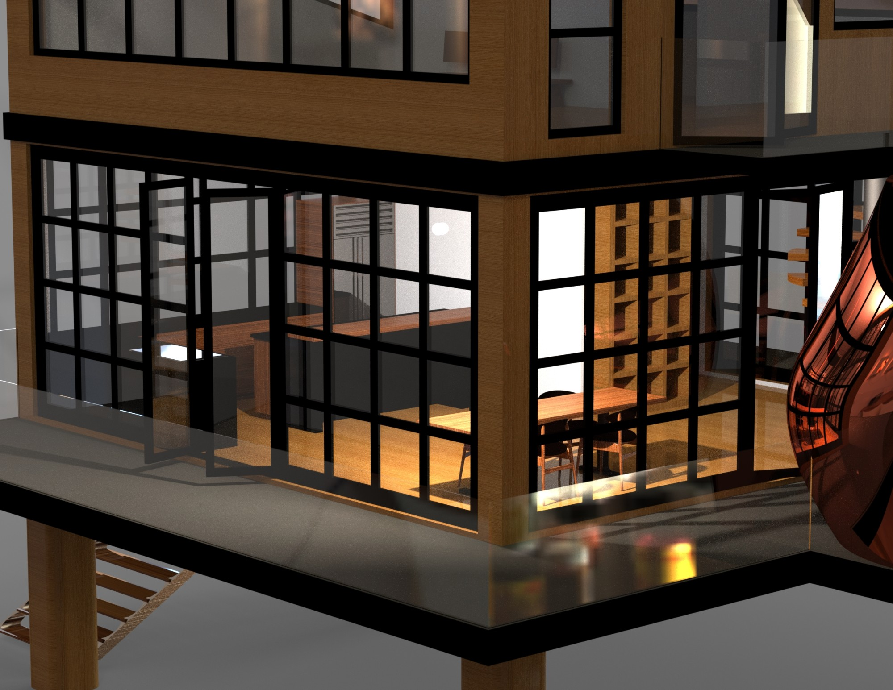

Architecture · Concept
Loft House
The Loft House is a fun conceptual project. It takes cues from Japanese and Contemporary Design. With an emphasis on light and openness, this house is the perfect getaway abode, featuring one main bedroom, a large living area, and a 360-degree deck.
- Influences Japanese · Contemporary
- Bedrooms 1
- Deck 360°



